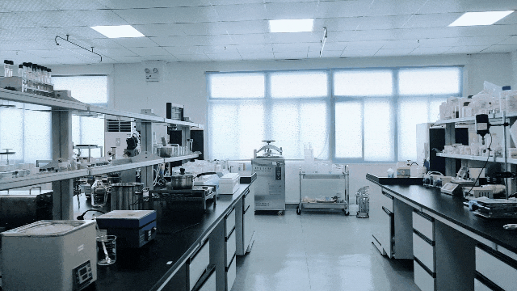
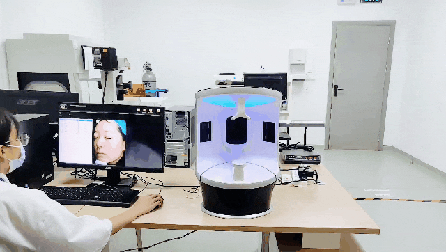
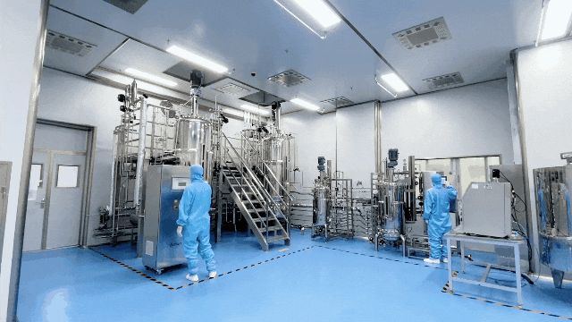
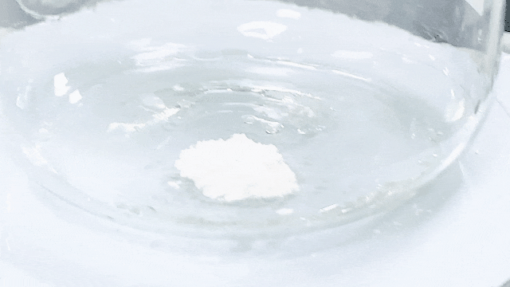
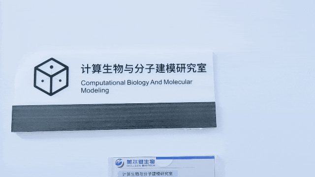

Biotechnology Co., Ltd.")

Mellgen(Shenzhen)biosubstance Technology Companylocated in major production Innovation Shenzhen International Bio-Valley， Equipped with Biological Transdermal Technologyincubation platformunits 、 GMPCell Factory（1000m²）、Formulation Productionplatform units （2000m²）， 7units Fermenter（totaling 5 tons）、Freeze-Dried bioproduction、 bioproductionand others，capable of conducting moleculesbiosubstance science、cell biologysubstance science、Fermentationand purification engineering、formulation development and human Efficacy Verificationand othersR&D operations。The company commands an end-to-end chain from Upstream Molecular Design、Process Development and efficacy validation to downstream raw material and finished product manufacturingonindustrial chain。

moleculesand Synthetic biosubstance scienceLaboratory 、 、genetic engineering and molecules and othersfor biosubstance major molecules moleculesbiosubstance scienceand genetic engineering and ， 、Proteins and and others。 Technology DNARecombinant 、major probiotic Cellular and 、Integrating Protein in in and others。

applied VISIA for 。VISIA is A Novel can for manager science ，it applied sciencebecome 、RBX and soft Technology， and 、 、 and manager ，using and by in while production bio and ，such as ( )、 、 and others， by it while such as 、 、 and and others in ， while for Solutions。

Mellgen BiotechAs a Biological Transdermal Technology scholar ，Powered by University of Science and Technology of China (USTC)Life Science and South China University of Technology (SCUT)medical science Technology ，inbiosubstance major molecules research， InnovationIngredients platform units 。InnovationIngredientsplatform units for using Synthetic biosubstance sciencefor TechnologyDevelopmentIngredients two times 。 、micro biosubstance Fermentation、 、 substance Extract and other science Technologyfor Ingredients Innovation ，Powered by Synthetic biosubstance scienceproduction onfull global micro biosubstance source library 、 Fermentation 、new Type Extract and manufacturing processesTechnologyand others ， high enhance Lits multi- （ 、Transdermal 、 and others）， major production applied Applications，can for realizing Raw Material Customization，for Building 。

Ingredients applied in ， Innovation ， new Type high Ingredients ，can realize enhance Services。

biosubstance and molecules integrating biosubstance scienceand molecules manager and manager Technology applied to biosubstance major molecules researchin 。 applied coming manager this Type ， biosubstance major molecules applied and can 。